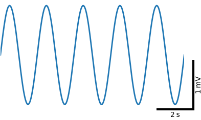
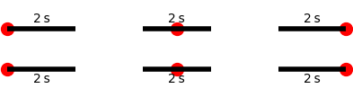
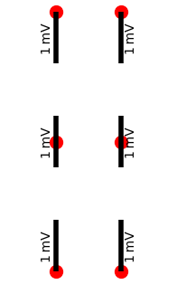

Module plottools.scalebars
Labeled scale bars.

Axes member functions
xscalebar(): horizontal scale bar with label.yscalebar(): vertical scale bar with label.scalebars(): horizontal and vertical scale bars with labels.
Settings
scalebars_params(): set rc settings for scalebars.
matplotlib.rcParams defined by the scalebar module:
scalebar.format.large: '%.0f'
scalebar.format.small: '%.1f'
scalebar.linewidth: 2
scalebar.color: 'k'
scalebar.capsize: 0
scalebar.caplinewidth: 0.5
scalebar.font: dict()
Install/uninstall scalebars functions
You usually do not need to call these functions. Upon loading the scalebars
module, install_scalebars() is called automatically.
install_scalebars(): install functions of the scalebars module in matplotlib.uninstall_scalebars(): uninstall all code of the scalebars module from matplotlib.
Alternatives
- https://stackoverflow.com/questions/39786714/how-to-insert-scale-bar-in-a-map-in-matplotlib
- AnchoredSizeBar
- matplotlib-scalebar
Expand source code
"""
Labeled scale bars.

## Axes member functions
- `xscalebar()`: horizontal scale bar with label.
- `yscalebar()`: vertical scale bar with label.
- `scalebars()`: horizontal and vertical scale bars with labels.
## Settings
- `scalebars_params()`: set rc settings for scalebars.
`matplotlib.rcParams` defined by the scalebar module:
```py
scalebar.format.large: '%.0f'
scalebar.format.small: '%.1f'
scalebar.linewidth: 2
scalebar.color: 'k'
scalebar.capsize: 0
scalebar.caplinewidth: 0.5
scalebar.font: dict()
```
## Install/uninstall scalebars functions
You usually do not need to call these functions. Upon loading the scalebars
module, `install_scalebars()` is called automatically.
- `install_scalebars()`: install functions of the scalebars module in matplotlib.
- `uninstall_scalebars()`: uninstall all code of the scalebars module from matplotlib.
## Alternatives
- https://stackoverflow.com/questions/39786714/how-to-insert-scale-bar-in-a-map-in-matplotlib
- [AnchoredSizeBar](https://matplotlib.org/stable/api/_as_gen/mpl_toolkits.axes_grid1.anchored_artists.AnchoredSizeBar.html#mpl_toolkits.axes_grid1.anchored_artists.AnchoredSizeBar)
- [matplotlib-scalebar](https://github.com/ppinard/matplotlib-scalebar)
"""
import numpy as np
import matplotlib as mpl
import matplotlib.pyplot as plt
import matplotlib.rcsetup as mrc
from .rcsetup import _validate_fontdict
def xscalebar(ax, x, y, width, wunit=None, wformat=None,
ha='left', va='bottom', hat='center',
lw=None, color=None, capsize=None,
clw=None, return_coords=False, **kwargs):
""" Horizontal scale bar with label.
The first two arguments set the anchor point
on which the scalebar is positioned. The scalebar position is given in
relative coordinates of the axes (ranging from 0 to 1).
The third argument sets the length of the scale bar in data
coordinates of the x-axis, followed by a string setting the unit of
the scale.
The following code and figure illustrate the positioning of the
scalebar and its annotation. `ha` (horizontal alignment) determines
whether the anchor is on the 'left', 'center', or 'right' of the
scalebar. The vertical alignment (`va`) determines whether the
annotation is on top ('top') or below ('bottom') the scalebar. In
the figure the position of the scalebar, the anchor point, is shown
as a red circle.
```py
ax.xscalebar(0.0, 0.8, 2, 's', ha='left', va='top')
ax.xscalebar(0.5, 0.8, 2, 's', ha='center', va='top')
ax.xscalebar(1.0, 0.8, 2, 's', ha='right', va='top')
ax.xscalebar(0.0, 0.3, 2, 's', ha='left', va='bottom')
ax.xscalebar(0.5, 0.3, 2, 's', ha='center', va='bottom')
ax.xscalebar(1.0, 0.3, 2, 's', ha='right', va='bottom')
```

Parameters
----------
ax: matplotlib axes
Axes where to draw the scale bar.
x: float
x-coordinate where to draw the scale bar in relative units of the axes.
y: float
y-coordinate where to draw the scale bar in relative units of the axes.
width: float
Length of the scale bar in units of the data's x-values.
wunit: string or None
Optional unit of the data's x-values.
wformat: string or None
Optional format string for formatting the label of the scale bar
or simply a string used for labeling the scale bar.
If None take value from rcParams `scalebar.format.large` for width larger than one,
or `scalebar.format.small` for width smaller than one.
ha: 'left', 'right', or 'center'
Scale bar aligned left, right, or centered to (x, y)
va: 'top' or 'bottom'
Label of the scale bar either above or below the scale bar.
hat: 'left', 'right', or 'center'
Horizontal alignment of text:
text aligned on left, right or center of scale bar.
lw: int, float, None
Line width of the scale bar. If None take value from rcSetting `scalebar.linewidth`.
color: matplotlib color
Color of the scalebar.
capsize: float or None
If larger then zero draw cap lines at the ends of the bar.
The length of the lines is given in points (same unit as linewidth).
If None take value from rcParam `scalebar.capsize`.
clw: int, float, None
Line width of the cap lines.
If None take value from rcParam `scalebar.caplinewidth`.
return_coords: bool
For internal usage only. If `True` return `x0`, `x1`, and `y`
coordinates of scale bar in addition to artists.
kwargs: key-word arguments
Passed on to `ax.text()` used to print the scale bar label.
Defaults to `scalebar.font` rcParams settings.
Returns
-------
artists: list of matplotlib artists
The Lin2D and Text objects making up the scalebar.
Use it to hide the scale bar like this
```py
sb = ax.xscalebar(1.0, 0.0, 1, 'ms', ha='right')
[a.set_visible(False) for a in sb]
```
Examples
--------
```py
import matplotlib.pyplot as plt
import plottools.spines
import plottools.scalebars
fig, ax = plt.subplots()
ax.show_spines('')
ax.xscalebar(1.0, 0.0, 2, 's', ha='right', va='bottom')
```

"""
artists = []
ax.autoscale_view(False)
ax.autoscale(False)
# ax dimensions:
pixelx = np.abs(np.diff(ax.get_window_extent().get_points()[:,0]))[0]
pixely = np.abs(np.diff(ax.get_window_extent().get_points()[:,1]))[0]
xmin, xmax = ax.get_xlim()
ymin, ymax = ax.get_ylim()
unitx = xmax - xmin
unity = ymax - ymin
dxu = np.abs(unitx)/pixelx
dyu = np.abs(unity)/pixely
# transform x, y from relative units to axis units:
x = xmin + x*unitx
y = ymin + y*unity
# bar length:
if wformat is None:
wformat = mpl.rcParams['scalebar.format.large']
if width < 1.0:
wformat = mpl.rcParams['scalebar.format.small']
try:
ls = wformat % width
width = float(ls)
except TypeError:
ls = wformat
# bar:
if ha == 'left':
x0 = x
x1 = x+width
elif ha == 'right':
x0 = x-width
x1 = x
else:
x0 = x-0.5*width
x1 = x+0.5*width
# line width:
if lw is None:
lw = mpl.rcParams['scalebar.linewidth']
# color:
if color is None:
color = mpl.rcParams['scalebar.color']
# scalebar:
lh = ax.plot([x0, x1], [y, y], '-', color=color, lw=lw,
solid_capstyle='butt', clip_on=False)
if not return_coords:
artists.extend(lh)
# get y position of line in figure pixel coordinates:
ly = np.array(lh[0].get_window_extent(ax.get_figure().canvas.get_renderer()))[0,1]
# caps:
if capsize is None:
capsize = mpl.rcParams['scalebar.capsize']
if clw is None:
clw = mpl.rcParams['scalebar.caplinewidth']
if capsize > 0.0:
dy = capsize*dyu
cl = ax.plot([x0, x0], [y-dy, y+dy], '-', color=color, lw=clw,
solid_capstyle='butt', clip_on=False)
artists.extend(cl)
cl = ax.plot([x1, x1], [y-dy, y+dy], '-', color=color, lw=clw,
solid_capstyle='butt', clip_on=False)
artists.extend(cl)
# label:
if wunit:
if mpl.rcParams['text.usetex']:
ls += '\\,%s' % wunit
else:
ls += u'\u2009%s' % wunit
for k in mpl.rcParams['scalebar.font']:
if not k in kwargs:
kwargs[k] = mpl.rcParams['scalebar.font'][k]
xt = 0.5*(x0+x1)
if hat == 'left':
xt = x0
elif hat == 'right':
xt = x1
if va == 'top':
th = ax.text(xt, y, ls, clip_on=False,
ha=hat, va='bottom', **kwargs)
# get y coordinate of text bottom in figure pixel coordinates:
ty = np.array(th.get_window_extent(ax.get_figure().canvas.get_renderer()))[0,1]
dty = ly+0.5*lw + 2.0 - ty
else:
th = ax.text(xt, y, ls, clip_on=False,
ha=hat, va='top', **kwargs)
# get y coordinate of text bottom in figure pixel coordinates:
ty = np.array(th.get_window_extent(ax.get_figure().canvas.get_renderer()))[1,1]
dty = ly-0.5*lw - 2.0 - ty
th.set_position((xt, y+dyu*dty))
artists.append(th)
if return_coords:
return artists, x0, x1, y
else:
return artists
def yscalebar(ax, x, y, height, hunit=None, hformat=None,
ha='left', va='bottom', vat='center',
lw=None, color=None, capsize=None,
clw=None, return_coords=False, **kwargs):
""" Vertical scale bar with label.
The first two arguments set the anchor point
on which the scalebar is positioned. The scalebar position is given in
relative coordinates of the axes (ranging from 0 to 1).
The third argument sets the length of the scale bar in data
coordinates of the y-axis, followed by a string setting the unit of
the scale.
The following code and figure illustrate the positioning of the
scalebar and its annotation. `va` (vertical alignment) determines
whether the anchor is on the 'top', 'center', or 'bottom' of the
scalebar. The horizontal alignment (`ha`) determines whether the
annotation is to the 'left' or to the 'right' of the scale bar. In
the figure the position of the scalebar, the anchor point, is shown
as a red circle.
```py
ax.yscalebar(0.3, 1.0, 1, 'mV', ha='left', va='top')
ax.yscalebar(0.3, 0.5, 1, 'mV', ha='left', va='center')
ax.yscalebar(0.3, 0.0, 1, 'mV', ha='left', va='bottom')
ax.yscalebar(0.7, 1.0, 1, 'mV', ha='right', va='top')
ax.yscalebar(0.7, 0.5, 1, 'mV', ha='right', va='center')
ax.yscalebar(0.7, 0.0, 1, 'mV', ha='right', va='bottom')
```

Parameters
----------
ax: matplotlib axes
Axes where to draw the scale bar.
x: float
x-coordinate where to draw the scale bar in relative units of the axes.
y: float
y-coordinate where to draw the scale bar in relative units of the axes.
height: float
Length of the scale bar in units of the data's y-values.
hunit: string
Unit of the data's y-values.
hformat: string or None
Optional format string for formatting the label of the scale bar
or simply a string used for labeling the scale bar.
If None take value from rcParams `scalebar.format.large` for hight larger than one,
or `scalebar.format.small` for hight smaller than one.
ha: 'left' or 'right'
Label of the scale bar either to the left or to the right
of the scale bar.
va: 'top', 'bottom', or 'center'
Scale bar aligned below, above, or centered on (x, y).
vat: 'top', 'bottom', or 'center'
Vertical alignment of text:
text aligned on top, bottom or center of scale bar.
lw: int, float, None
Line width of the scale bar. If None take value from rcParams `scalebar.linewidth`.
color: matplotlib color
Color of the scalebar.
capsize: float or None
If larger then zero draw cap lines at the ends of the bar.
The length of the lines is given in points (same unit as linewidth).
If None take value from rcParams `scalebar.capsize`.
clw: int, float
Line width of the cap lines.
If None take value from rcParams `scalebar.caplinewidth`.
return_coords: bool
For internal usage only. If `True` return `x`, `y0`, and `y1`
coordinates of scale bar in addition to artists.
kwargs: key-word arguments
Passed on to `ax.text()` used to print the scale bar label.
Defaults to `scalebar.font` rcParams settings.
Returns
-------
artists: list of matplotlib artists
The Lin2D and Text objects making up the scalebar.
Use it to hide the scale bar like this
```py
sb = ax.yscalebar(1.0, 0.0, 1, 'mV', ha='right')
[a.set_visible(False) for a in sb]
```
Examples
--------
```py
import matplotlib.pyplot as plt
import plottools.spines
import plottools.scalebars
fig, ax = plt.subplots()
ax.show_spines('')
ax.yscalebar(1.05, 0.0, 1, 'mV', ha='right', va='bottom')
```

"""
artists = []
ax.autoscale_view(False)
ax.autoscale(False)
# ax dimensions:
pixelx = np.abs(np.diff(ax.get_window_extent().get_points()[:,0]))[0]
pixely = np.abs(np.diff(ax.get_window_extent().get_points()[:,1]))[0]
xmin, xmax = ax.get_xlim()
ymin, ymax = ax.get_ylim()
unitx = xmax - xmin
unity = ymax - ymin
dxu = np.abs(unitx)/pixelx
dyu = np.abs(unity)/pixely
# transform x, y from relative units to axis units:
x = xmin + x*unitx
y = ymin + y*unity
# bar length:
if hformat is None:
hformat = mpl.rcParams['scalebar.format.large']
if height < 1.0:
hformat = mpl.rcParams['scalebar.format.small']
try:
ls = hformat % height
width = float(ls)
except TypeError:
ls = hformat
# bar:
if va == 'bottom':
y0 = y
y1 = y+height
elif va == 'top':
y0 = y-height
y1 = y
else:
y0 = y-0.5*height
y1 = y+0.5*height
# line width:
if lw is None:
lw = mpl.rcParams['scalebar.linewidth']
# color:
if color is None:
color = mpl.rcParams['scalebar.color']
# scalebar:
lh = ax.plot([x, x], [y0, y1], '-', color=color, lw=lw,
solid_capstyle='butt', clip_on=False)
if not return_coords:
artists.extend(lh)
# get x position of line in figure pixel coordinates:
lx = np.array(lh[0].get_window_extent(ax.get_figure().canvas.get_renderer()))[0,0]
# caps:
if capsize is None:
capsize = mpl.rcParams['scalebar.capsize']
if clw is None:
clw = mpl.rcParams['scalebar.caplinewidth']
if capsize > 0.0:
dx = capsize*dxu
cl = ax.plot([x-dx, x+dx], [y0, y0], '-', color=color, lw=clw,
solid_capstyle='butt', clip_on=False)
artists.extend(cl)
cl = ax.plot([x-dx, x+dx], [y1, y1], '-', color=color, lw=clw,
solid_capstyle='butt', clip_on=False)
artists.extend(cl)
# label:
if hunit:
if mpl.rcParams['text.usetex']:
ls += '\\,%s' % hunit
else:
ls += u'\u2009%s' % hunit
for k in mpl.rcParams['scalebar.font']:
if not k in kwargs:
kwargs[k] = mpl.rcParams['scalebar.font'][k]
yt = 0.5*(y0+y1)
if vat == 'top':
yt = y1
elif vat == 'bottom':
yt = y0
if ha == 'right':
th = ax.text(x, yt, ls, clip_on=False, rotation=90.0,
ha='left', va=vat, **kwargs)
# get x coordinate of text bottom in figure pixel coordinates:
tx = np.array(th.get_window_extent(ax.get_figure().canvas.get_renderer()))[0,0]
dtx = lx+0.5*lw + 2.0 - tx
else:
th = ax.text(x, yt, ls, clip_on=False, rotation=90.0,
ha='right', va=vat, **kwargs)
# get x coordinate of text bottom in figure pixel coordinates:
tx = np.array(th.get_window_extent(ax.get_figure().canvas.get_renderer()))[1,0]
dtx = lx-0.5*lw - 1.0 - tx
th.set_position((x+dxu*dtx, yt))
artists.append(th)
if return_coords:
return artists, x, y0, y1
else:
return artists
def scalebars(ax, x, y, width, height, wunit=None, hunit=None,
wformat=None, hformat=None, ha='left', va='bottom',
hat='center', vat='center',
lw=None, color=None, **kwargs):
""" Horizontal and vertical scale bars with labels.
The first two arguments set the anchor point
on which the scalebar is positioned. The scalebar position is given in
relative coordinates of the axes (ranging from 0 to 1).
The third and forth arguments set the length of the scale bars in data
coordinates of the x- and y-axis, followed by two strings setting the unit of
the scales.
Horizontal alignment (`ha`) determines whether the anchor point and the
vertical scalebar is on the 'left' or on the 'right' of the horizontal
scalebar. Vertical alignment (`va`) determines whether the anchor point
and the horizontal scalebar are at the 'top' or 'bottom' of the vertical
scalebar. In the figure the position of the scalebar, the anchor point,
is shown as a red circle.
```py
ax.scalebars(0.2, 0.8, 2, 1, 's', 'mV', ha='left', va='top')
ax.scalebars(0.8, 0.8, 2, 1, 's', 'mV', ha='right', va='top')
ax.scalebars(0.2, 0.1, 2, 1, 's', 'mV', ha='left', va='bottom')
ax.scalebars(0.8, 0.1, 2, 1, 's', 'mV', ha='right', va='bottom')
```

Parameters
----------
ax: matplotlib axes
Axes where to draw the scale bar.
x: float
x-coordinate where to draw the scale bar in relative units of the axes.
y: float
y-coordinate where to draw the scale bar in relative units of the axes.
width: float
Length of horizontal scale bar in units of the data.
height: float
Length of vertical scale bar in units of the data.
wunit: string
Unit of x-values.
hunit: string
Unit of y-values.
wformat: string or None
Optional format string for formatting the x-label of the scale bar
or simply a string used for labeling the x scale bar.
If None take value from rcParams `scalebar.format.large` for width larger than one,
or `scalebar.format.small` for width smaller than one.
hformat: string or None
Optional format string for formatting the y-label of the scale bar
or simply a string used for labeling the y scale bar.
If None take value from rcParams `scalebar.format.large` for height larger than one,
or `scalebar.format.small` for height smaller than one.
ha: 'left' or 'right'
Scale bars aligned left or right to (x, y).
Vertical scale bar left or right.
va: 'top' or 'bottom'
Scale bars aligned above or below (x, y).
Horizontal scale bar on top or at the bottom.
hat: 'left', 'right', or 'center'
Horizontal alignment of text:
text aligned on left, right or center of scale bar.
vat: 'top', 'bottom', or 'center'
Vertical alignment of text:
text aligned on top, bottom or center of scale bar.
lw: int, float, None
Line width of the scale bar. If None take value from rcParams `scalebar.linewidth`.
color: matplotlib color
Color of the scalebar.
kwargs: key-word arguments
Passed on to `ax.text()` used to print the scale bar labels.
Defaults to `scalebar.font` rcParams settings.
Returns
-------
artists: list of matplotlib artists
The Lin2D and Text objects making up the scalebar.
Use it to hide the scale bar like this
```py
sb = ax.scalebar(1.0, 0.0, 2, 1, 'ms', 'mV')
[a.set_visible(False) for a in sb]
```
Examples
--------
```py
import matplotlib.pyplot as plt
import plottools.spines
import plottools.scalebars
fig, ax = plt.subplots()
ax.show_spines('')
ax.scalebars(1.05, 0.0, 2, 1, 's', 'mV', ha='right', va='bottom')
```

"""
artists = []
# line width:
if lw is None:
lw = mpl.rcParams['scalebar.linewidth']
# color:
if color is None:
color = mpl.rcParams['scalebar.color']
a, x0, x1, yy = xscalebar(ax, x, y, width, wunit, wformat, ha, va, hat,
lw, color, 0.0, 1, return_coords=True, **kwargs)
artists.extend(a)
ax.lines.pop()
a, xx, y0, y1 = yscalebar(ax, x, y, height, hunit, hformat, ha, va, vat,
lw, color, 0.0, 1, return_coords=True, **kwargs)
artists.extend(a)
ax.lines.pop()
if x0 == xx:
if y0 == yy:
la = ax.plot([x0, x0, x1], [y1, y0, y0], '-', color=color, lw=lw,
solid_capstyle='butt', solid_joinstyle='miter', clip_on=False)
else:
la = ax.plot([x0, x0, x1], [y0, y1, y1], '-', color=color, lw=lw,
solid_capstyle='butt', solid_joinstyle='miter', clip_on=False)
else:
if y0 == yy:
la = ax.plot([x0, x1, x1], [y0, y0, y1], '-', color=color, lw=lw,
solid_capstyle='butt', solid_joinstyle='miter', clip_on=False)
else:
la = ax.plot([x0, x1, x1], [y1, y1, y0], '-', color=color, lw=lw,
solid_capstyle='butt', solid_joinstyle='miter', clip_on=False)
artists.extend(la)
return artists
def scalebars_params(format_large=None, format_small=None, lw=2,
color=None, capsize=None, clw=None, font=None):
""" Set rc settings for scalebars.
Only parameters that are not `None` are updated.
Parameters
----------
format_large: string
Format string for formatting the label of the scale bar
for scalebars longer than one. Set rcParam `scalebar.format.large`.
format_small: string
Format string for formatting the label of the scale bar
for scalebars shorter than one. Set rcParam `scalebar.format.small`.
lw: int, float
Line width of a scale bar. Set rcParam `scalebar.linewidth`.
color: matplotlib color
Color of the scalebar. Set rcParam `scalebar.color`.
capsize: float
If larger then zero draw cap lines at the ends of the bar.
The length of the lines is given in points (same unit as linewidth).
Set rcParam `scalebar.capsize`.
clw: int, float
Line width of the cap lines. Set rcParam `scalebar.caplinewidth`.
font: dict
Dictionary with font settings
(e.g. fontsize, fontfamiliy, fontstyle, fontweight, bbox, ...).
Set rcParam `scalebar.font`.
"""
if format_large is not None and 'scalebar.format.large' in mrc._validators:
mpl.rcParams['scalebar.format.large'] = format_large
if format_small is not None and 'scalebar.format.small' in mrc._validators:
mpl.rcParams['scalebar.format.small'] = format_small
if lw is not None and 'scalebar.linewidth' in mrc._validators:
mpl.rcParams['scalebar.linewidth'] = lw
if color is not None and 'scalebar.color' in mrc._validators:
mpl.rcParams['scalebar.color'] = color
if capsize is not None and 'scalebar.capsize' in mrc._validators:
mpl.rcParams['scalebar.capsize'] = capsize
if clw is not None and 'scalebar.caplinewidth' in mrc._validators:
mpl.rcParams['scalebar.caplinewidth'] = clw
if font is not None and 'scalebar.font' in mrc._validators:
mpl.rcParams.update({'scalebar.font': font})
def install_scalebars():
""" Install scalebars functions on matplotlib axes.
This function is also called automatically upon importing the module.
See also
--------
uninstall_scalebars()
"""
if not hasattr(mpl.axes.Axes, 'xscalebar'):
mpl.axes.Axes.xscalebar = xscalebar
if not hasattr(mpl.axes.Axes, 'yscalebar'):
mpl.axes.Axes.yscalebar = yscalebar
if not hasattr(mpl.axes.Axes, 'scalebars'):
mpl.axes.Axes.scalebars = scalebars
# add scalebar parameter to rc configuration:
if 'scalebar.format.large' not in mpl.rcParams:
mrc._validators['scalebar.format.large'] = mrc.validate_string
mrc._validators['scalebar.format.small'] = mrc.validate_string
mrc._validators['scalebar.linewidth'] = mrc.validate_float
mrc._validators['scalebar.color'] = mrc.validate_string
mrc._validators['scalebar.capsize'] = mrc.validate_float
mrc._validators['scalebar.caplinewidth'] = mrc.validate_float
mrc._validators['scalebar.font'] = _validate_fontdict
mpl.rcParams.update({'scalebar.format.large': '%.0f',
'scalebar.format.small': '%.1f',
'scalebar.linewidth': 2,
'scalebar.color': 'k',
'scalebar.capsize': 0,
'scalebar.caplinewidth': 0.5,
'scalebar.font': dict()})
def uninstall_scalebars():
""" Uninstall scalebars functions from matplotlib axes.
Call this code to disable anything that was installed by `install_scalebars()`.
See also
--------
install_scalebars()
"""
if hasattr(mpl.axes.Axes, 'xscalebar'):
delattr(mpl.axes.Axes, 'xscalebar')
if hasattr(mpl.axes.Axes, 'yscalebar'):
delattr(mpl.axes.Axes, 'yscalebar')
if hasattr(mpl.axes.Axes, 'scalebars'):
delattr(mpl.axes.Axes, 'scalebars')
mrc._validators.pop('scalebar.format.large', None)
mrc._validators.pop('scalebar.format.small', None)
mrc._validators.pop('scalebar.linewidth', None)
mrc._validators.pop('scalebar.color', None)
mrc._validators.pop('scalebar.capsize', None)
mrc._validators.pop('scalebar.caplinewidth', None)
mrc._validators.pop('scalebar.font', None)
install_scalebars()
def demo():
""" Run a demonstration of the scalebars module.
"""
def draw_anchor(ax, x, y):
ax.plot(x, y, '.r', ms=20, transform=ax.transAxes)
scalebars_params(format_large='%.0f', format_small='%.1f', lw=2,
capsize=0, clw=0.5, font=dict(fontweight='bold'))
fig, ax = plt.subplots()
fig.suptitle('plottools.scalebars')
x = np.arange(-2.0, 5.0, 0.01)
ax.plot(x, np.sin(2.0*np.pi*1.0*x))
ax.set_xlim(-2.0, 5.0)
ax.set_ylim(-2.5, 1.5)
ax.set_xlabel('Time [s]')
draw_anchor(ax, 0.0, 0.3)
ax.xscalebar(0.0, 0.3, 1.0, 's', ha='left', va='bottom')
draw_anchor(ax, 0.5, 0.3)
ax.xscalebar(0.5, 0.3, 1.5, 's', '%.1f', ha='center', va='bottom', lw=4,
capsize=8, clw=1)
draw_anchor(ax, 1.0, 0.3)
ax.xscalebar(1.0, 0.3, 0.55, 's', ha='right', va='top')
draw_anchor(ax, 0.3, 0.25)
ax.yscalebar(0.3, 0.25, 0.5, '', ha='left', va='bottom')
draw_anchor(ax, 0.7, 0.35)
ax.yscalebar(0.7, 0.35, 0.3, '', ha='right', va='top', capsize=4, clw=1)
draw_anchor(ax, 0.1, 0.1)
ax.scalebars(0.1, 0.1, 1.2, 0.5, 's', '', '%.1f', ha='left', va='bottom', hat='left', vat='bottom')
draw_anchor(ax, 0.9, 0.1)
ax.scalebars(0.9, 0.1, 0.8, 0.7, 's', '', ha='right', va='bottom',
hat='left', vat='top')
draw_anchor(ax, 0.1, 0.9)
ax.scalebars(0.1, 0.9, 1.5, 0.5, 's', '', ha='left', va='top', lw=4)
draw_anchor(ax, 0.95, 0.9)
ax.scalebars(0.95, 0.9, 1.0, 0.5, 's', '', ha='right', va='top', lw=4)
plt.show()
if __name__ == "__main__":
demo()Functions
def xscalebar(ax, x, y, width, wunit=None, wformat=None, ha='left', va='bottom', hat='center', lw=None, color=None, capsize=None, clw=None, return_coords=False, **kwargs)-
Horizontal scale bar with label.
The first two arguments set the anchor point on which the scalebar is positioned. The scalebar position is given in relative coordinates of the axes (ranging from 0 to 1).
The third argument sets the length of the scale bar in data coordinates of the x-axis, followed by a string setting the unit of the scale.
The following code and figure illustrate the positioning of the scalebar and its annotation.
ha(horizontal alignment) determines whether the anchor is on the 'left', 'center', or 'right' of the scalebar. The vertical alignment (va) determines whether the annotation is on top ('top') or below ('bottom') the scalebar. In the figure the position of the scalebar, the anchor point, is shown as a red circle.ax.xscalebar(0.0, 0.8, 2, 's', ha='left', va='top') ax.xscalebar(0.5, 0.8, 2, 's', ha='center', va='top') ax.xscalebar(1.0, 0.8, 2, 's', ha='right', va='top') ax.xscalebar(0.0, 0.3, 2, 's', ha='left', va='bottom') ax.xscalebar(0.5, 0.3, 2, 's', ha='center', va='bottom') ax.xscalebar(1.0, 0.3, 2, 's', ha='right', va='bottom')
Parameters
ax:matplotlib axes- Axes where to draw the scale bar.
x:float- x-coordinate where to draw the scale bar in relative units of the axes.
y:float- y-coordinate where to draw the scale bar in relative units of the axes.
width:float- Length of the scale bar in units of the data's x-values.
wunit:stringorNone- Optional unit of the data's x-values.
wformat:stringorNone- Optional format string for formatting the label of the scale bar
or simply a string used for labeling the scale bar.
If None take value from rcParams
scalebar.format.largefor width larger than one, orscalebar.format.smallfor width smaller than one. ha:'left', 'right',or'center'- Scale bar aligned left, right, or centered to (x, y)
va:'top'or'bottom'- Label of the scale bar either above or below the scale bar.
hat:'left', 'right',or'center'- Horizontal alignment of text: text aligned on left, right or center of scale bar.
lw:int, float, None- Line width of the scale bar. If None take value from rcSetting
scalebar.linewidth. color:matplotlib color- Color of the scalebar.
capsize:floatorNone- If larger then zero draw cap lines at the ends of the bar.
The length of the lines is given in points (same unit as linewidth).
If None take value from rcParam
scalebar.capsize. clw:int, float, None- Line width of the cap lines.
If None take value from rcParam
scalebar.caplinewidth. return_coords:bool- For internal usage only. If
Truereturnx0,x1, andycoordinates of scale bar in addition to artists. kwargs:key-word arguments- Passed on to
ax.text()used to print the scale bar label. Defaults toscalebar.fontrcParams settings.
Returns
artists:listofmatplotlib artists- The Lin2D and Text objects making up the scalebar.
Use it to hide the scale bar like this
py sb = ax.xscalebar(1.0, 0.0, 1, 'ms', ha='right') [a.set_visible(False) for a in sb]
Examples
import matplotlib.pyplot as plt import plottools.spines import plottools.scalebars fig, ax = plt.subplots() ax.show_spines('') ax.xscalebar(1.0, 0.0, 2, 's', ha='right', va='bottom')
Expand source code
def xscalebar(ax, x, y, width, wunit=None, wformat=None, ha='left', va='bottom', hat='center', lw=None, color=None, capsize=None, clw=None, return_coords=False, **kwargs): """ Horizontal scale bar with label. The first two arguments set the anchor point on which the scalebar is positioned. The scalebar position is given in relative coordinates of the axes (ranging from 0 to 1). The third argument sets the length of the scale bar in data coordinates of the x-axis, followed by a string setting the unit of the scale. The following code and figure illustrate the positioning of the scalebar and its annotation. `ha` (horizontal alignment) determines whether the anchor is on the 'left', 'center', or 'right' of the scalebar. The vertical alignment (`va`) determines whether the annotation is on top ('top') or below ('bottom') the scalebar. In the figure the position of the scalebar, the anchor point, is shown as a red circle. ```py ax.xscalebar(0.0, 0.8, 2, 's', ha='left', va='top') ax.xscalebar(0.5, 0.8, 2, 's', ha='center', va='top') ax.xscalebar(1.0, 0.8, 2, 's', ha='right', va='top') ax.xscalebar(0.0, 0.3, 2, 's', ha='left', va='bottom') ax.xscalebar(0.5, 0.3, 2, 's', ha='center', va='bottom') ax.xscalebar(1.0, 0.3, 2, 's', ha='right', va='bottom') ```  Parameters ---------- ax: matplotlib axes Axes where to draw the scale bar. x: float x-coordinate where to draw the scale bar in relative units of the axes. y: float y-coordinate where to draw the scale bar in relative units of the axes. width: float Length of the scale bar in units of the data's x-values. wunit: string or None Optional unit of the data's x-values. wformat: string or None Optional format string for formatting the label of the scale bar or simply a string used for labeling the scale bar. If None take value from rcParams `scalebar.format.large` for width larger than one, or `scalebar.format.small` for width smaller than one. ha: 'left', 'right', or 'center' Scale bar aligned left, right, or centered to (x, y) va: 'top' or 'bottom' Label of the scale bar either above or below the scale bar. hat: 'left', 'right', or 'center' Horizontal alignment of text: text aligned on left, right or center of scale bar. lw: int, float, None Line width of the scale bar. If None take value from rcSetting `scalebar.linewidth`. color: matplotlib color Color of the scalebar. capsize: float or None If larger then zero draw cap lines at the ends of the bar. The length of the lines is given in points (same unit as linewidth). If None take value from rcParam `scalebar.capsize`. clw: int, float, None Line width of the cap lines. If None take value from rcParam `scalebar.caplinewidth`. return_coords: bool For internal usage only. If `True` return `x0`, `x1`, and `y` coordinates of scale bar in addition to artists. kwargs: key-word arguments Passed on to `ax.text()` used to print the scale bar label. Defaults to `scalebar.font` rcParams settings. Returns ------- artists: list of matplotlib artists The Lin2D and Text objects making up the scalebar. Use it to hide the scale bar like this ```py sb = ax.xscalebar(1.0, 0.0, 1, 'ms', ha='right') [a.set_visible(False) for a in sb] ``` Examples -------- ```py import matplotlib.pyplot as plt import plottools.spines import plottools.scalebars fig, ax = plt.subplots() ax.show_spines('') ax.xscalebar(1.0, 0.0, 2, 's', ha='right', va='bottom') ```  """ artists = [] ax.autoscale_view(False) ax.autoscale(False) # ax dimensions: pixelx = np.abs(np.diff(ax.get_window_extent().get_points()[:,0]))[0] pixely = np.abs(np.diff(ax.get_window_extent().get_points()[:,1]))[0] xmin, xmax = ax.get_xlim() ymin, ymax = ax.get_ylim() unitx = xmax - xmin unity = ymax - ymin dxu = np.abs(unitx)/pixelx dyu = np.abs(unity)/pixely # transform x, y from relative units to axis units: x = xmin + x*unitx y = ymin + y*unity # bar length: if wformat is None: wformat = mpl.rcParams['scalebar.format.large'] if width < 1.0: wformat = mpl.rcParams['scalebar.format.small'] try: ls = wformat % width width = float(ls) except TypeError: ls = wformat # bar: if ha == 'left': x0 = x x1 = x+width elif ha == 'right': x0 = x-width x1 = x else: x0 = x-0.5*width x1 = x+0.5*width # line width: if lw is None: lw = mpl.rcParams['scalebar.linewidth'] # color: if color is None: color = mpl.rcParams['scalebar.color'] # scalebar: lh = ax.plot([x0, x1], [y, y], '-', color=color, lw=lw, solid_capstyle='butt', clip_on=False) if not return_coords: artists.extend(lh) # get y position of line in figure pixel coordinates: ly = np.array(lh[0].get_window_extent(ax.get_figure().canvas.get_renderer()))[0,1] # caps: if capsize is None: capsize = mpl.rcParams['scalebar.capsize'] if clw is None: clw = mpl.rcParams['scalebar.caplinewidth'] if capsize > 0.0: dy = capsize*dyu cl = ax.plot([x0, x0], [y-dy, y+dy], '-', color=color, lw=clw, solid_capstyle='butt', clip_on=False) artists.extend(cl) cl = ax.plot([x1, x1], [y-dy, y+dy], '-', color=color, lw=clw, solid_capstyle='butt', clip_on=False) artists.extend(cl) # label: if wunit: if mpl.rcParams['text.usetex']: ls += '\\,%s' % wunit else: ls += u'\u2009%s' % wunit for k in mpl.rcParams['scalebar.font']: if not k in kwargs: kwargs[k] = mpl.rcParams['scalebar.font'][k] xt = 0.5*(x0+x1) if hat == 'left': xt = x0 elif hat == 'right': xt = x1 if va == 'top': th = ax.text(xt, y, ls, clip_on=False, ha=hat, va='bottom', **kwargs) # get y coordinate of text bottom in figure pixel coordinates: ty = np.array(th.get_window_extent(ax.get_figure().canvas.get_renderer()))[0,1] dty = ly+0.5*lw + 2.0 - ty else: th = ax.text(xt, y, ls, clip_on=False, ha=hat, va='top', **kwargs) # get y coordinate of text bottom in figure pixel coordinates: ty = np.array(th.get_window_extent(ax.get_figure().canvas.get_renderer()))[1,1] dty = ly-0.5*lw - 2.0 - ty th.set_position((xt, y+dyu*dty)) artists.append(th) if return_coords: return artists, x0, x1, y else: return artists def yscalebar(ax, x, y, height, hunit=None, hformat=None, ha='left', va='bottom', vat='center', lw=None, color=None, capsize=None, clw=None, return_coords=False, **kwargs)-
Vertical scale bar with label.
The first two arguments set the anchor point on which the scalebar is positioned. The scalebar position is given in relative coordinates of the axes (ranging from 0 to 1).
The third argument sets the length of the scale bar in data coordinates of the y-axis, followed by a string setting the unit of the scale.
The following code and figure illustrate the positioning of the scalebar and its annotation.
va(vertical alignment) determines whether the anchor is on the 'top', 'center', or 'bottom' of the scalebar. The horizontal alignment (ha) determines whether the annotation is to the 'left' or to the 'right' of the scale bar. In the figure the position of the scalebar, the anchor point, is shown as a red circle.ax.yscalebar(0.3, 1.0, 1, 'mV', ha='left', va='top') ax.yscalebar(0.3, 0.5, 1, 'mV', ha='left', va='center') ax.yscalebar(0.3, 0.0, 1, 'mV', ha='left', va='bottom') ax.yscalebar(0.7, 1.0, 1, 'mV', ha='right', va='top') ax.yscalebar(0.7, 0.5, 1, 'mV', ha='right', va='center') ax.yscalebar(0.7, 0.0, 1, 'mV', ha='right', va='bottom')
Parameters
ax:matplotlib axes- Axes where to draw the scale bar.
x:float- x-coordinate where to draw the scale bar in relative units of the axes.
y:float- y-coordinate where to draw the scale bar in relative units of the axes.
height:float- Length of the scale bar in units of the data's y-values.
hunit:string- Unit of the data's y-values.
hformat:stringorNone- Optional format string for formatting the label of the scale bar
or simply a string used for labeling the scale bar.
If None take value from rcParams
scalebar.format.largefor hight larger than one, orscalebar.format.smallfor hight smaller than one. ha:'left'or'right'- Label of the scale bar either to the left or to the right of the scale bar.
va:'top', 'bottom',or'center'- Scale bar aligned below, above, or centered on (x, y).
vat:'top', 'bottom',or'center'- Vertical alignment of text: text aligned on top, bottom or center of scale bar.
lw:int, float, None- Line width of the scale bar. If None take value from rcParams
scalebar.linewidth. color:matplotlib color- Color of the scalebar.
capsize:floatorNone- If larger then zero draw cap lines at the ends of the bar.
The length of the lines is given in points (same unit as linewidth).
If None take value from rcParams
scalebar.capsize. clw:int, float- Line width of the cap lines.
If None take value from rcParams
scalebar.caplinewidth. return_coords:bool- For internal usage only. If
Truereturnx,y0, andy1coordinates of scale bar in addition to artists. kwargs:key-word arguments- Passed on to
ax.text()used to print the scale bar label. Defaults toscalebar.fontrcParams settings.
Returns
artists:listofmatplotlib artists- The Lin2D and Text objects making up the scalebar.
Use it to hide the scale bar like this
py sb = ax.yscalebar(1.0, 0.0, 1, 'mV', ha='right') [a.set_visible(False) for a in sb]
Examples
import matplotlib.pyplot as plt import plottools.spines import plottools.scalebars fig, ax = plt.subplots() ax.show_spines('') ax.yscalebar(1.05, 0.0, 1, 'mV', ha='right', va='bottom')
Expand source code
def yscalebar(ax, x, y, height, hunit=None, hformat=None, ha='left', va='bottom', vat='center', lw=None, color=None, capsize=None, clw=None, return_coords=False, **kwargs): """ Vertical scale bar with label. The first two arguments set the anchor point on which the scalebar is positioned. The scalebar position is given in relative coordinates of the axes (ranging from 0 to 1). The third argument sets the length of the scale bar in data coordinates of the y-axis, followed by a string setting the unit of the scale. The following code and figure illustrate the positioning of the scalebar and its annotation. `va` (vertical alignment) determines whether the anchor is on the 'top', 'center', or 'bottom' of the scalebar. The horizontal alignment (`ha`) determines whether the annotation is to the 'left' or to the 'right' of the scale bar. In the figure the position of the scalebar, the anchor point, is shown as a red circle. ```py ax.yscalebar(0.3, 1.0, 1, 'mV', ha='left', va='top') ax.yscalebar(0.3, 0.5, 1, 'mV', ha='left', va='center') ax.yscalebar(0.3, 0.0, 1, 'mV', ha='left', va='bottom') ax.yscalebar(0.7, 1.0, 1, 'mV', ha='right', va='top') ax.yscalebar(0.7, 0.5, 1, 'mV', ha='right', va='center') ax.yscalebar(0.7, 0.0, 1, 'mV', ha='right', va='bottom') ```  Parameters ---------- ax: matplotlib axes Axes where to draw the scale bar. x: float x-coordinate where to draw the scale bar in relative units of the axes. y: float y-coordinate where to draw the scale bar in relative units of the axes. height: float Length of the scale bar in units of the data's y-values. hunit: string Unit of the data's y-values. hformat: string or None Optional format string for formatting the label of the scale bar or simply a string used for labeling the scale bar. If None take value from rcParams `scalebar.format.large` for hight larger than one, or `scalebar.format.small` for hight smaller than one. ha: 'left' or 'right' Label of the scale bar either to the left or to the right of the scale bar. va: 'top', 'bottom', or 'center' Scale bar aligned below, above, or centered on (x, y). vat: 'top', 'bottom', or 'center' Vertical alignment of text: text aligned on top, bottom or center of scale bar. lw: int, float, None Line width of the scale bar. If None take value from rcParams `scalebar.linewidth`. color: matplotlib color Color of the scalebar. capsize: float or None If larger then zero draw cap lines at the ends of the bar. The length of the lines is given in points (same unit as linewidth). If None take value from rcParams `scalebar.capsize`. clw: int, float Line width of the cap lines. If None take value from rcParams `scalebar.caplinewidth`. return_coords: bool For internal usage only. If `True` return `x`, `y0`, and `y1` coordinates of scale bar in addition to artists. kwargs: key-word arguments Passed on to `ax.text()` used to print the scale bar label. Defaults to `scalebar.font` rcParams settings. Returns ------- artists: list of matplotlib artists The Lin2D and Text objects making up the scalebar. Use it to hide the scale bar like this ```py sb = ax.yscalebar(1.0, 0.0, 1, 'mV', ha='right') [a.set_visible(False) for a in sb] ``` Examples -------- ```py import matplotlib.pyplot as plt import plottools.spines import plottools.scalebars fig, ax = plt.subplots() ax.show_spines('') ax.yscalebar(1.05, 0.0, 1, 'mV', ha='right', va='bottom') ```  """ artists = [] ax.autoscale_view(False) ax.autoscale(False) # ax dimensions: pixelx = np.abs(np.diff(ax.get_window_extent().get_points()[:,0]))[0] pixely = np.abs(np.diff(ax.get_window_extent().get_points()[:,1]))[0] xmin, xmax = ax.get_xlim() ymin, ymax = ax.get_ylim() unitx = xmax - xmin unity = ymax - ymin dxu = np.abs(unitx)/pixelx dyu = np.abs(unity)/pixely # transform x, y from relative units to axis units: x = xmin + x*unitx y = ymin + y*unity # bar length: if hformat is None: hformat = mpl.rcParams['scalebar.format.large'] if height < 1.0: hformat = mpl.rcParams['scalebar.format.small'] try: ls = hformat % height width = float(ls) except TypeError: ls = hformat # bar: if va == 'bottom': y0 = y y1 = y+height elif va == 'top': y0 = y-height y1 = y else: y0 = y-0.5*height y1 = y+0.5*height # line width: if lw is None: lw = mpl.rcParams['scalebar.linewidth'] # color: if color is None: color = mpl.rcParams['scalebar.color'] # scalebar: lh = ax.plot([x, x], [y0, y1], '-', color=color, lw=lw, solid_capstyle='butt', clip_on=False) if not return_coords: artists.extend(lh) # get x position of line in figure pixel coordinates: lx = np.array(lh[0].get_window_extent(ax.get_figure().canvas.get_renderer()))[0,0] # caps: if capsize is None: capsize = mpl.rcParams['scalebar.capsize'] if clw is None: clw = mpl.rcParams['scalebar.caplinewidth'] if capsize > 0.0: dx = capsize*dxu cl = ax.plot([x-dx, x+dx], [y0, y0], '-', color=color, lw=clw, solid_capstyle='butt', clip_on=False) artists.extend(cl) cl = ax.plot([x-dx, x+dx], [y1, y1], '-', color=color, lw=clw, solid_capstyle='butt', clip_on=False) artists.extend(cl) # label: if hunit: if mpl.rcParams['text.usetex']: ls += '\\,%s' % hunit else: ls += u'\u2009%s' % hunit for k in mpl.rcParams['scalebar.font']: if not k in kwargs: kwargs[k] = mpl.rcParams['scalebar.font'][k] yt = 0.5*(y0+y1) if vat == 'top': yt = y1 elif vat == 'bottom': yt = y0 if ha == 'right': th = ax.text(x, yt, ls, clip_on=False, rotation=90.0, ha='left', va=vat, **kwargs) # get x coordinate of text bottom in figure pixel coordinates: tx = np.array(th.get_window_extent(ax.get_figure().canvas.get_renderer()))[0,0] dtx = lx+0.5*lw + 2.0 - tx else: th = ax.text(x, yt, ls, clip_on=False, rotation=90.0, ha='right', va=vat, **kwargs) # get x coordinate of text bottom in figure pixel coordinates: tx = np.array(th.get_window_extent(ax.get_figure().canvas.get_renderer()))[1,0] dtx = lx-0.5*lw - 1.0 - tx th.set_position((x+dxu*dtx, yt)) artists.append(th) if return_coords: return artists, x, y0, y1 else: return artists def scalebars(ax, x, y, width, height, wunit=None, hunit=None, wformat=None, hformat=None, ha='left', va='bottom', hat='center', vat='center', lw=None, color=None, **kwargs)-
Horizontal and vertical scale bars with labels.
The first two arguments set the anchor point on which the scalebar is positioned. The scalebar position is given in relative coordinates of the axes (ranging from 0 to 1).
The third and forth arguments set the length of the scale bars in data coordinates of the x- and y-axis, followed by two strings setting the unit of the scales.
Horizontal alignment (
ha) determines whether the anchor point and the vertical scalebar is on the 'left' or on the 'right' of the horizontal scalebar. Vertical alignment (va) determines whether the anchor point and the horizontal scalebar are at the 'top' or 'bottom' of the vertical scalebar. In the figure the position of the scalebar, the anchor point, is shown as a red circle.ax.scalebars(0.2, 0.8, 2, 1, 's', 'mV', ha='left', va='top') ax.scalebars(0.8, 0.8, 2, 1, 's', 'mV', ha='right', va='top') ax.scalebars(0.2, 0.1, 2, 1, 's', 'mV', ha='left', va='bottom') ax.scalebars(0.8, 0.1, 2, 1, 's', 'mV', ha='right', va='bottom')
Parameters
ax:matplotlib axes- Axes where to draw the scale bar.
x:float- x-coordinate where to draw the scale bar in relative units of the axes.
y:float- y-coordinate where to draw the scale bar in relative units of the axes.
width:float- Length of horizontal scale bar in units of the data.
height:float- Length of vertical scale bar in units of the data.
wunit:string- Unit of x-values.
hunit:string- Unit of y-values.
wformat:stringorNone- Optional format string for formatting the x-label of the scale bar
or simply a string used for labeling the x scale bar.
If None take value from rcParams
scalebar.format.largefor width larger than one, orscalebar.format.smallfor width smaller than one. hformat:stringorNone- Optional format string for formatting the y-label of the scale bar
or simply a string used for labeling the y scale bar.
If None take value from rcParams
scalebar.format.largefor height larger than one, orscalebar.format.smallfor height smaller than one. ha:'left'or'right'- Scale bars aligned left or right to (x, y). Vertical scale bar left or right.
va:'top'or'bottom'- Scale bars aligned above or below (x, y). Horizontal scale bar on top or at the bottom.
hat:'left', 'right',or'center'- Horizontal alignment of text: text aligned on left, right or center of scale bar.
vat:'top', 'bottom',or'center'- Vertical alignment of text: text aligned on top, bottom or center of scale bar.
lw:int, float, None- Line width of the scale bar. If None take value from rcParams
scalebar.linewidth. color:matplotlib color- Color of the scalebar.
kwargs:key-word arguments- Passed on to
ax.text()used to print the scale bar labels. Defaults toscalebar.fontrcParams settings.
Returns
artists:listofmatplotlib artists- The Lin2D and Text objects making up the scalebar.
Use it to hide the scale bar like this
py sb = ax.scalebar(1.0, 0.0, 2, 1, 'ms', 'mV') [a.set_visible(False) for a in sb]
Examples
import matplotlib.pyplot as plt import plottools.spines import plottools.scalebars fig, ax = plt.subplots() ax.show_spines('') ax.scalebars(1.05, 0.0, 2, 1, 's', 'mV', ha='right', va='bottom')Expand source code
def scalebars(ax, x, y, width, height, wunit=None, hunit=None, wformat=None, hformat=None, ha='left', va='bottom', hat='center', vat='center', lw=None, color=None, **kwargs): """ Horizontal and vertical scale bars with labels. The first two arguments set the anchor point on which the scalebar is positioned. The scalebar position is given in relative coordinates of the axes (ranging from 0 to 1). The third and forth arguments set the length of the scale bars in data coordinates of the x- and y-axis, followed by two strings setting the unit of the scales. Horizontal alignment (`ha`) determines whether the anchor point and the vertical scalebar is on the 'left' or on the 'right' of the horizontal scalebar. Vertical alignment (`va`) determines whether the anchor point and the horizontal scalebar are at the 'top' or 'bottom' of the vertical scalebar. In the figure the position of the scalebar, the anchor point, is shown as a red circle. ```py ax.scalebars(0.2, 0.8, 2, 1, 's', 'mV', ha='left', va='top') ax.scalebars(0.8, 0.8, 2, 1, 's', 'mV', ha='right', va='top') ax.scalebars(0.2, 0.1, 2, 1, 's', 'mV', ha='left', va='bottom') ax.scalebars(0.8, 0.1, 2, 1, 's', 'mV', ha='right', va='bottom') ```  Parameters ---------- ax: matplotlib axes Axes where to draw the scale bar. x: float x-coordinate where to draw the scale bar in relative units of the axes. y: float y-coordinate where to draw the scale bar in relative units of the axes. width: float Length of horizontal scale bar in units of the data. height: float Length of vertical scale bar in units of the data. wunit: string Unit of x-values. hunit: string Unit of y-values. wformat: string or None Optional format string for formatting the x-label of the scale bar or simply a string used for labeling the x scale bar. If None take value from rcParams `scalebar.format.large` for width larger than one, or `scalebar.format.small` for width smaller than one. hformat: string or None Optional format string for formatting the y-label of the scale bar or simply a string used for labeling the y scale bar. If None take value from rcParams `scalebar.format.large` for height larger than one, or `scalebar.format.small` for height smaller than one. ha: 'left' or 'right' Scale bars aligned left or right to (x, y). Vertical scale bar left or right. va: 'top' or 'bottom' Scale bars aligned above or below (x, y). Horizontal scale bar on top or at the bottom. hat: 'left', 'right', or 'center' Horizontal alignment of text: text aligned on left, right or center of scale bar. vat: 'top', 'bottom', or 'center' Vertical alignment of text: text aligned on top, bottom or center of scale bar. lw: int, float, None Line width of the scale bar. If None take value from rcParams `scalebar.linewidth`. color: matplotlib color Color of the scalebar. kwargs: key-word arguments Passed on to `ax.text()` used to print the scale bar labels. Defaults to `scalebar.font` rcParams settings. Returns ------- artists: list of matplotlib artists The Lin2D and Text objects making up the scalebar. Use it to hide the scale bar like this ```py sb = ax.scalebar(1.0, 0.0, 2, 1, 'ms', 'mV') [a.set_visible(False) for a in sb] ``` Examples -------- ```py import matplotlib.pyplot as plt import plottools.spines import plottools.scalebars fig, ax = plt.subplots() ax.show_spines('') ax.scalebars(1.05, 0.0, 2, 1, 's', 'mV', ha='right', va='bottom') ```  """ artists = [] # line width: if lw is None: lw = mpl.rcParams['scalebar.linewidth'] # color: if color is None: color = mpl.rcParams['scalebar.color'] a, x0, x1, yy = xscalebar(ax, x, y, width, wunit, wformat, ha, va, hat, lw, color, 0.0, 1, return_coords=True, **kwargs) artists.extend(a) ax.lines.pop() a, xx, y0, y1 = yscalebar(ax, x, y, height, hunit, hformat, ha, va, vat, lw, color, 0.0, 1, return_coords=True, **kwargs) artists.extend(a) ax.lines.pop() if x0 == xx: if y0 == yy: la = ax.plot([x0, x0, x1], [y1, y0, y0], '-', color=color, lw=lw, solid_capstyle='butt', solid_joinstyle='miter', clip_on=False) else: la = ax.plot([x0, x0, x1], [y0, y1, y1], '-', color=color, lw=lw, solid_capstyle='butt', solid_joinstyle='miter', clip_on=False) else: if y0 == yy: la = ax.plot([x0, x1, x1], [y0, y0, y1], '-', color=color, lw=lw, solid_capstyle='butt', solid_joinstyle='miter', clip_on=False) else: la = ax.plot([x0, x1, x1], [y1, y1, y0], '-', color=color, lw=lw, solid_capstyle='butt', solid_joinstyle='miter', clip_on=False) artists.extend(la) return artists def scalebars_params(format_large=None, format_small=None, lw=2, color=None, capsize=None, clw=None, font=None)-
Set rc settings for scalebars.
Only parameters that are not
Noneare updated.Parameters
format_large:string- Format string for formatting the label of the scale bar
for scalebars longer than one. Set rcParam
scalebar.format.large. format_small:string- Format string for formatting the label of the scale bar
for scalebars shorter than one. Set rcParam
scalebar.format.small. lw:int, float- Line width of a scale bar. Set rcParam
scalebar.linewidth. color:matplotlib color- Color of the scalebar. Set rcParam
scalebar.color. capsize:float- If larger then zero draw cap lines at the ends of the bar.
The length of the lines is given in points (same unit as linewidth).
Set rcParam
scalebar.capsize. clw:int, float- Line width of the cap lines. Set rcParam
scalebar.caplinewidth. font:dict- Dictionary with font settings
(e.g. fontsize, fontfamiliy, fontstyle, fontweight, bbox, …).
Set rcParam
scalebar.font.
Expand source code
def scalebars_params(format_large=None, format_small=None, lw=2, color=None, capsize=None, clw=None, font=None): """ Set rc settings for scalebars. Only parameters that are not `None` are updated. Parameters ---------- format_large: string Format string for formatting the label of the scale bar for scalebars longer than one. Set rcParam `scalebar.format.large`. format_small: string Format string for formatting the label of the scale bar for scalebars shorter than one. Set rcParam `scalebar.format.small`. lw: int, float Line width of a scale bar. Set rcParam `scalebar.linewidth`. color: matplotlib color Color of the scalebar. Set rcParam `scalebar.color`. capsize: float If larger then zero draw cap lines at the ends of the bar. The length of the lines is given in points (same unit as linewidth). Set rcParam `scalebar.capsize`. clw: int, float Line width of the cap lines. Set rcParam `scalebar.caplinewidth`. font: dict Dictionary with font settings (e.g. fontsize, fontfamiliy, fontstyle, fontweight, bbox, ...). Set rcParam `scalebar.font`. """ if format_large is not None and 'scalebar.format.large' in mrc._validators: mpl.rcParams['scalebar.format.large'] = format_large if format_small is not None and 'scalebar.format.small' in mrc._validators: mpl.rcParams['scalebar.format.small'] = format_small if lw is not None and 'scalebar.linewidth' in mrc._validators: mpl.rcParams['scalebar.linewidth'] = lw if color is not None and 'scalebar.color' in mrc._validators: mpl.rcParams['scalebar.color'] = color if capsize is not None and 'scalebar.capsize' in mrc._validators: mpl.rcParams['scalebar.capsize'] = capsize if clw is not None and 'scalebar.caplinewidth' in mrc._validators: mpl.rcParams['scalebar.caplinewidth'] = clw if font is not None and 'scalebar.font' in mrc._validators: mpl.rcParams.update({'scalebar.font': font}) def install_scalebars()-
Install scalebars functions on matplotlib axes.
This function is also called automatically upon importing the module.
See Also
Expand source code
def install_scalebars(): """ Install scalebars functions on matplotlib axes. This function is also called automatically upon importing the module. See also -------- uninstall_scalebars() """ if not hasattr(mpl.axes.Axes, 'xscalebar'): mpl.axes.Axes.xscalebar = xscalebar if not hasattr(mpl.axes.Axes, 'yscalebar'): mpl.axes.Axes.yscalebar = yscalebar if not hasattr(mpl.axes.Axes, 'scalebars'): mpl.axes.Axes.scalebars = scalebars # add scalebar parameter to rc configuration: if 'scalebar.format.large' not in mpl.rcParams: mrc._validators['scalebar.format.large'] = mrc.validate_string mrc._validators['scalebar.format.small'] = mrc.validate_string mrc._validators['scalebar.linewidth'] = mrc.validate_float mrc._validators['scalebar.color'] = mrc.validate_string mrc._validators['scalebar.capsize'] = mrc.validate_float mrc._validators['scalebar.caplinewidth'] = mrc.validate_float mrc._validators['scalebar.font'] = _validate_fontdict mpl.rcParams.update({'scalebar.format.large': '%.0f', 'scalebar.format.small': '%.1f', 'scalebar.linewidth': 2, 'scalebar.color': 'k', 'scalebar.capsize': 0, 'scalebar.caplinewidth': 0.5, 'scalebar.font': dict()}) def uninstall_scalebars()-
Uninstall scalebars functions from matplotlib axes.
Call this code to disable anything that was installed by
install_scalebars().See Also
Expand source code
def uninstall_scalebars(): """ Uninstall scalebars functions from matplotlib axes. Call this code to disable anything that was installed by `install_scalebars()`. See also -------- install_scalebars() """ if hasattr(mpl.axes.Axes, 'xscalebar'): delattr(mpl.axes.Axes, 'xscalebar') if hasattr(mpl.axes.Axes, 'yscalebar'): delattr(mpl.axes.Axes, 'yscalebar') if hasattr(mpl.axes.Axes, 'scalebars'): delattr(mpl.axes.Axes, 'scalebars') mrc._validators.pop('scalebar.format.large', None) mrc._validators.pop('scalebar.format.small', None) mrc._validators.pop('scalebar.linewidth', None) mrc._validators.pop('scalebar.color', None) mrc._validators.pop('scalebar.capsize', None) mrc._validators.pop('scalebar.caplinewidth', None) mrc._validators.pop('scalebar.font', None) def demo()-
Run a demonstration of the scalebars module.
Expand source code
def demo(): """ Run a demonstration of the scalebars module. """ def draw_anchor(ax, x, y): ax.plot(x, y, '.r', ms=20, transform=ax.transAxes) scalebars_params(format_large='%.0f', format_small='%.1f', lw=2, capsize=0, clw=0.5, font=dict(fontweight='bold')) fig, ax = plt.subplots() fig.suptitle('plottools.scalebars') x = np.arange(-2.0, 5.0, 0.01) ax.plot(x, np.sin(2.0*np.pi*1.0*x)) ax.set_xlim(-2.0, 5.0) ax.set_ylim(-2.5, 1.5) ax.set_xlabel('Time [s]') draw_anchor(ax, 0.0, 0.3) ax.xscalebar(0.0, 0.3, 1.0, 's', ha='left', va='bottom') draw_anchor(ax, 0.5, 0.3) ax.xscalebar(0.5, 0.3, 1.5, 's', '%.1f', ha='center', va='bottom', lw=4, capsize=8, clw=1) draw_anchor(ax, 1.0, 0.3) ax.xscalebar(1.0, 0.3, 0.55, 's', ha='right', va='top') draw_anchor(ax, 0.3, 0.25) ax.yscalebar(0.3, 0.25, 0.5, '', ha='left', va='bottom') draw_anchor(ax, 0.7, 0.35) ax.yscalebar(0.7, 0.35, 0.3, '', ha='right', va='top', capsize=4, clw=1) draw_anchor(ax, 0.1, 0.1) ax.scalebars(0.1, 0.1, 1.2, 0.5, 's', '', '%.1f', ha='left', va='bottom', hat='left', vat='bottom') draw_anchor(ax, 0.9, 0.1) ax.scalebars(0.9, 0.1, 0.8, 0.7, 's', '', ha='right', va='bottom', hat='left', vat='top') draw_anchor(ax, 0.1, 0.9) ax.scalebars(0.1, 0.9, 1.5, 0.5, 's', '', ha='left', va='top', lw=4) draw_anchor(ax, 0.95, 0.9) ax.scalebars(0.95, 0.9, 1.0, 0.5, 's', '', ha='right', va='top', lw=4) plt.show()